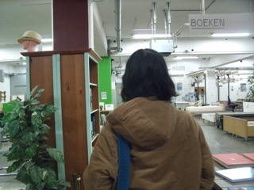
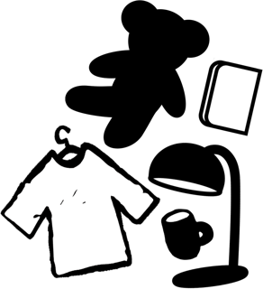

Second Love
Second Love de website waar je meer te weten komt waar je moet kringlopen in Amsterdam.
Geef spullen en kleding een tweede kans, op zoek naar een nieuwe pan? Dan moet je naar rataplan gaan, de beste kringlopen in Amsterdam. Teveel kleding in de kast? Doneer het aan een kringloop om een ander blij te maken!
Geef tweedehandse spullen de tweede liefde die ze verdienen.
Waarom tweedehands?
Je bespaart veel kosten met tweedehands te kopen. Als je goed kijkt, vind je zeker goede koopjes. In kringlopen kan je veel verschillende spullen vinden, van coole jassen en mooi servies naar een mooie comfortabele meubels.
Je kan veel vinden, maar waarom zou je tweede-hands winkelen en niet nieuw?
Oude spullen
Teveel spullen en geen idee wat je ermee moet? Ongebruikte spelletjes, kleding die je niet meer past, een oude tafel in de garage met een laagje stof, die kan je doneren bij de lokale kringloop.